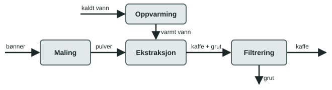
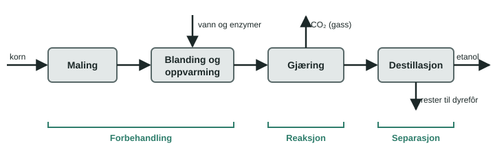

Hva er en enhetsoperasjon?
Et prosessanlegg kan se ut som et virvar av tanker, rør og kolonner. Men nesten alle anlegg er bygd av de samme byggeklossene, bare satt sammen på ulike måter. Disse byggeklossene kalles enhetsoperasjoner. Kjenner du dem, kan du forstå et anlegg du aldri har sett før.
Et anlegg gjør råstoff om til produkt
Alle prosessanlegg har samme oppgave: De tar imot et råstoff og gjør det om til et produkt som noen vil kjøpe. Råstoffet kan være malm, olje, gass, tømmer, korn eller sjøvann. Produktet kan være metall, bensin, gjødsel, papir eller medisin.
Underveis blir det nesten alltid noe til overs. Det som har en nytte, kalles et biprodukt. Det som ikke har noen nytte, er avfall eller utslipp, og det må tas hånd om på en trygg måte.
Jobben gjøres ikke i ett stort trinn, men i mange små trinn etter hverandre. Hvert trinn gjør én bestemt jobb, for eksempel å varme opp, blande eller skille. Et slikt trinn kalles en enhetsoperasjon.
Et eksempel fra kjøkkenet
Du bruker enhetsoperasjoner hver gang du lager kaffe. Se på figuren.

- Maling: Bønnene males til pulver. Da blir overflaten større, og vannet kommer lettere til.
- Oppvarming: Vannet varmes opp.
- Ekstraksjon: Det varme vannet trekker smak og farge ut av pulveret.
- Filtrering: Filteret holder igjen grut, og kaffen renner gjennom.
Et kaffeanlegg i stor skala, for eksempel en fabrikk som lager pulverkaffe, bruker de samme operasjonene. Utstyret er bare mye større, og det kommer noen trinn i tillegg, for eksempel tørking av kaffen til pulver.
Samme prinsipp, ulike anlegg
Det viktigste med enhetsoperasjoner er dette: En enhetsoperasjon virker på samme måte uansett hvilket stoff og hvilket anlegg det gjelder.
Ta destillasjon som eksempel. Et oljeraffineri destillerer råolje til bensin og diesel. En fabrikk som lager sprit, destillerer etanol fra en gjæret væske. Stoffene er helt forskjellige, men prinsippet er det samme: Væsken varmes til den koker, og dampen kjøles slik at den blir væske igjen. Stoffene skilles fordi de har ulikt kokepunkt. Det samme gjelder en pumpe, en varmeveksler eller et filter. Det virker på samme måte på et smelteverk, et meieri og en gjødselfabrikk.
Derfor er det lurt å lære enhetsoperasjonene hver for seg:
- Det du lærer om én pumpe eller én varmeveksler, kan du bruke i alle anlegg. En prosessoperatør kan bytte bransje og likevel kjenne igjen det meste av utstyret.
- Når du får et nytt anlegg å sette deg inn i, kan du dele det opp i enhetsoperasjoner. Da blir det store og uoversiktlige mye lettere å forstå.
- Når et anlegg skal bygges, setter ingeniørene det sammen av kjente enhetsoperasjoner. De trenger ikke finne opp alt på nytt.
Et anlegg i fire trinn
Figuren under viser et forenklet anlegg som lager etanol av korn. Etanol brukes blant annet som drivstoff.

- Maling: Kornet males, slik at stivelsen inne i kornet blir lett å komme til.
- Blanding og oppvarming: Det malte kornet blandes med vann og enzymer og varmes opp. Enzymene bryter ned stivelsen til sukker.
- Gjæring: Gjærsopp gjør sukkeret om til etanol og karbondioksid (CO2). Dette er en kjemisk reaksjon, og den skjer i en stor tank som kalles en reaktor.
- Destillasjon: Etanolen skilles fra vannet og restene av kornet. Restene blir brukt som dyrefôr, altså et biprodukt. Etanol til drivstoff må i tillegg gjennom et ekstra trinn som fjerner det siste vannet.
Legg merke til mønsteret under figuren. Mange anlegg følger det:
- Forbehandling: Råstoffet gjøres klart, for eksempel ved å knuse, blande eller varme det.
- Reaksjon: Stoffene reagerer og blir til nye stoffer.
- Separasjon: Produktet skilles fra det som er til overs. Separasjon betyr å skille stoffer fra hverandre.
Ikke alle anlegg har en reaksjon. Et anlegg som lager salt av sjøvann, skiller bare stoffer som allerede finnes der. Hvorfor operasjonene kommer i den rekkefølgen de gjør, lærer du mer om i emnet Et helt anlegg, til slutt i dette temaet.
En tegning der hvert trinn er en boks og pilene viser hvor stoffene går, kalles et blokkskjema. Det er den enkleste måten å tegne et anlegg på. Hvordan du leser og tegner blokkskjema og mer detaljerte flytskjemaer, lærer du i Tekniske flytskjemaer.
I noen bøker brukes ordet enhetsoperasjon bare om trinn der stoffet endres fysisk, for eksempel oppvarming og filtrering. Trinn med en kjemisk reaksjon kalles da en enhetsprosess. På dette nettstedet regner vi også reaktoren som en enhetsoperasjon.
Hva gjør enhetsoperasjonene?
Det finnes mange enhetsoperasjoner, men jobbene de gjør, kan deles i noen få grupper:
- Flytte stoffer: pumper og kompressorer flytter væsker og gasser gjennom rørene i anlegget, og ventiler styrer strømmen.
- Endre temperatur: varmevekslere varmer opp eller kjøler ned.
- Endre størrelse: knusere og møller gjør store biter små.
- Blande: omrørere blander stoffer, slik at de kan reagere eller løses opp.
- Reagere: i en reaktor blir stoffene til nye stoffer.
- Skille: filtrering, sentrifugering og destillasjon skiller stoffer fra hverandre.
Resten av temaet går gjennom disse operasjonene én etter én. På neste side ser du hvordan de deles i mekaniske, termiske og kjemiske operasjoner.
Hver enhetsoperasjon har sine egne farer. Det kan være høyt trykk, høy temperatur, bevegelige deler eller farlige kjemikalier. Når du lærer hvordan utstyret virker, lærer du også hvor faren sitter. Før noen jobber inne i eller på utstyr, skal det stoppes og sikres med lås og merk.
Test deg selv
1. Hva er en enhetsoperasjon?
- Et helt prosessanlegg fra råstoff til produkt
- Ett trinn i en prosess som gjør én bestemt jobb
- Et instrument som måler trykk eller temperatur
En enhetsoperasjon er ett trinn, for eksempel oppvarming, filtrering eller destillasjon. Et anlegg er satt sammen av mange slike trinn.
2. Et oljeraffineri og en spritfabrikk bruker begge destillasjon. Hva er likt?
- Stoffene som destilleres
- Prinsippet: stoffene skilles ved koking og kjøling fordi de har ulikt kokepunkt
- Ingenting, for destillasjon virker ulikt i hver bransje
Stoffene er forskjellige, men destillasjon virker etter det samme prinsippet overalt: Væsken kokes, dampen kjøles til væske igjen, og stoffene skilles fordi de har ulikt kokepunkt. Derfor kan du lære en enhetsoperasjon én gang og kjenne den igjen i mange anlegg.
3. Når du lager kaffe, holder filteret igjen grut. Hvilken enhetsoperasjon er det?
- Ekstraksjon
- Maling
- Filtrering
Filtrering skiller faste partikler (grut) fra en væske (kaffe). Ekstraksjon er trinnet før, der det varme vannet trekker smak og farge ut av pulveret.
4. Et etanolanlegg lager også dyrefôr av restene av kornet. Hva kalles dyrefôret?
- Råstoff
- Biprodukt
- Avfall
Et biprodukt er noe som blir til overs i prosessen, men som har en nytte. Avfall er det som blir til overs og ikke har noen nytte.
5. Mange anlegg følger det samme mønsteret. Hvilken rekkefølge er vanlig?
- Separasjon, reaksjon, forbehandling
- Forbehandling, reaksjon, separasjon
- Reaksjon, forbehandling, separasjon
Først gjøres råstoffet klart (forbehandling). Så reagerer stoffene (reaksjon). Til slutt skilles produktet fra resten (separasjon).
Ordliste
| Begrep | Forklaring | Engelsk |
|---|---|---|
| enhetsoperasjon | Ett trinn i en prosess som gjør én bestemt jobb, for eksempel destillasjon, filtrering eller varmeveksling. | unit operation |
| prosessanlegg | Et anlegg der råstoff blir gjort om til produkter i mange trinn etter hverandre. | process plant |
| råstoff | Stoffet som går inn i et anlegg og blir gjort om til produkt, for eksempel malm, olje eller korn. | feedstock, raw material |
| produkt | Stoffet eller varen et anlegg lager for å selge eller bruke videre. | |
| biprodukt | Noe som blir til overs i en prosess, men som har en nytte og kan selges eller brukes. | |
| separasjon | Å skille stoffer fra hverandre, for eksempel med filtrering eller destillasjon. | |
| reaktor | En tank eller beholder der stoffer reagerer og blir til nye stoffer. | reactor |
| blokkskjema | En forenklet tegning av en prosess. Hvert trinn er en boks, og pilene viser hvordan stoffene går mellom trinnene. | block diagram |
Les mer
- Tekniske flytskjemaer: blokkskjema og flytskjema.
- Knusing og maling: et eksempel på en enhetsoperasjon, forklart i detalj.
Om kildene: Teksten, eksemplene og figurene på denne siden er laget for dette nettstedet. Siden bygger på undervisningsopplegg i kjemiprosess- og laboratoriefag ved Sauda vgs, som er utarbeidet med utgangspunkt i blant annet Kjemien stemmer, Laboranten og åpne nettkilder.